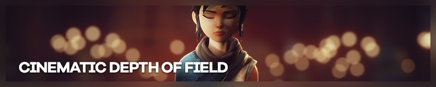
Jim2point0 拍摄
电影感景深（Cinematic Depth of Field）是一款用于 ReShade 的顶尖景深着色器，可在 OtisFX 仓库中获取，该仓库始终包含最新版本。
本指南假定你已在 ReShade 中正确设置了深度缓冲。 电影感景深是一个基于镜头参数进行对焦和模糊控制的景深着色器。初次使用可能会感到困惑， 本指南将帮助你理解各参数的含义，并指导你如何充分发挥这个着色器的潜力。
电影感景深着色器中的所有设置均为拖动滑块，即点击后按住鼠标左键向左或向右拖动，分别对应减小和增大数值。按住 shift 键拖动可加快调整速度。按住
ctrl 键点击可直接输入所需数值。
以下截图使用电影感景深 v1.2.5 拍摄，发布于 2022 年 3 月 28 日。
对焦
景深着色器最重要的功能之一，就是聚焦于三维世界中的正确元素。默认情况下， 着色器的对焦模式设置为自动对焦和鼠标驱动自动对焦。这意味着当你在场景中移动鼠标时， 鼠标指针下方的元素将成为着色器的焦点，其前方和后方的一切都将被模糊处理。
这种方式适用于某些情况，但如果你想构图后切换到工具提高屏幕分辨率， 就会失去焦点。在这种情况下，最好切换到手动对焦。只需在 Reshade 菜单的电影感景深设置中取消勾选 Use auto-focus（使用自动对焦）选项即可。
切换到手动对焦后，着色器将聚焦于距摄像机一定距离的位置。该距离由 Manual-focus plane（手动对焦平面）滑块指定。拖动文本框直至达到所需数值。
与摄像机的距离
焦点元素与摄像机之间有一定距离。对焦平面距摄像机越近， 焦外区域的模糊效果就越强。
对焦辅助覆盖层
电影感景深具有一个重要的对焦辅助功能——焦外平面覆盖层。勾选 Show out-of-focus plane overlay on mouse down（按下鼠标时显示焦外平面覆盖层）后， 每次按住鼠标左键时着色器都会显示覆盖层。覆盖层由三种颜色组成：白色表示远景平面 （焦点后方区域）的焦外元素，红色表示近景平面（焦点前方区域）的焦外元素， 蓝色线条表示精确对焦的位置。
它还会以无色显示超焦距区域，紧邻蓝色线条。该区域被视为"合焦"状态， 但会逐渐过渡到"焦外"状态。启用自动对焦时，按下鼠标左键会显示准星， 自动对焦点位于准星中心。
建议在设置对焦内容时使用此选项。
焦距与光圈
电影感景深的对焦系统基于三个要素：焦点元素（对焦平面）到摄像机的距离、镜头长度（焦距）和 光圈。摄像机与被摄体的距离可以通过移动摄像机靠近被摄体来控制（同时需要重新聚焦三维世界中要对焦的元素）。剩下的就是焦距和光圈。
就镜头长度而言，通常镜头越长，视野（FoV）越窄，焦外区域的模糊效果越强。就光圈而言， 通常数值越低，镜头开口越大，进入镜头/摄像机的光线越多，焦外区域的模糊效果也越强。对于电影感景深着色器来说，这两个参数的作用基本相同，因为着色器本身不控制进入摄像机的光量。
那么应该选择什么数值？先看看着色器的默认值：焦距 100mm，光圈 2.8。如果在现代相机上使用焦距 100mm、光圈 2.8 的镜头，可以拍出漂亮的人像，具有浅景深和优美的背景虚化效果。
以下是默认设置的效果：
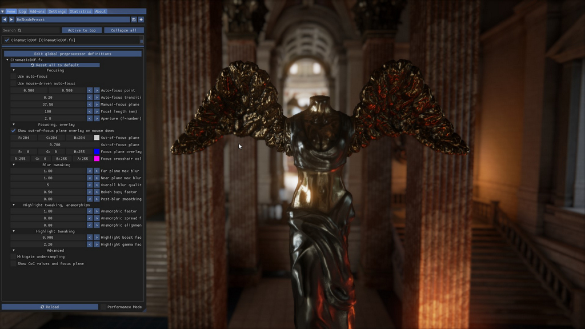
焦距 100mm，光圈 2.8
仔细观察雕像翅膀上的模糊效果，以及背景中浓郁的虚化效果。
如果将镜头和光圈改为现代相机常见套机镜头的参数——焦距 50mm、光圈 5.6，效果会有所不同：
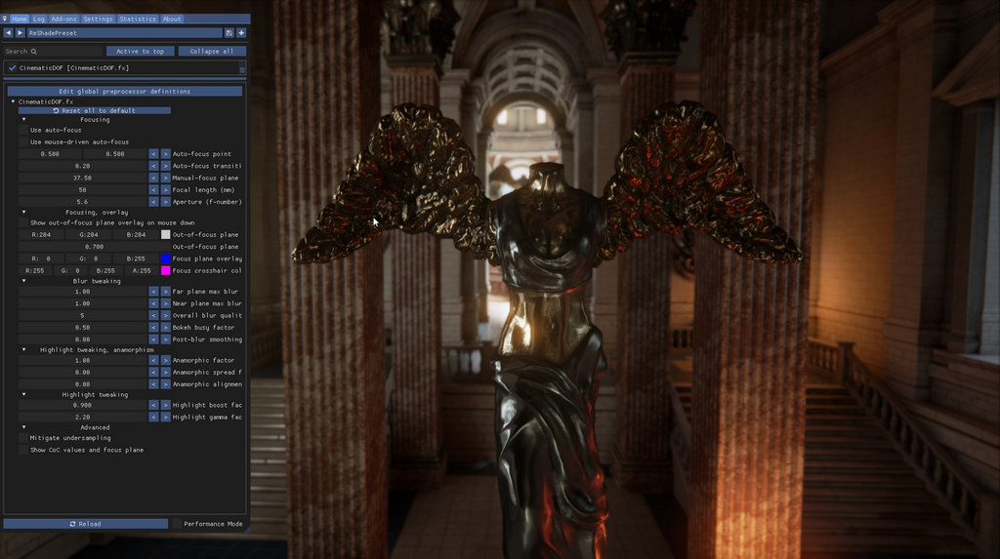
焦距 50mm，光圈 5.6
可以明显看到背景的模糊程度大幅降低。焦点仍在雕像上，摄像机距离不变。雕像翅膀上的模糊也消失了，呈现清晰的合焦状态。
以下是同一场景使用焦距 100mm、光圈 5.6 的效果：
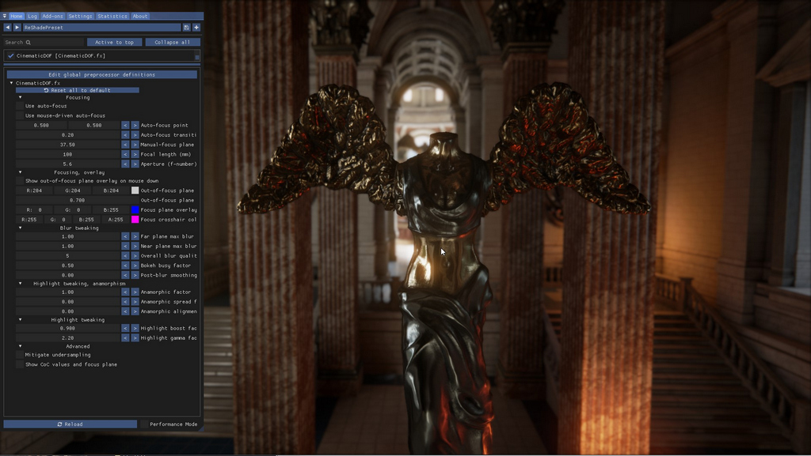
焦距 100mm，光圈 5.6
以及焦距 50mm、光圈 2.8 的效果：
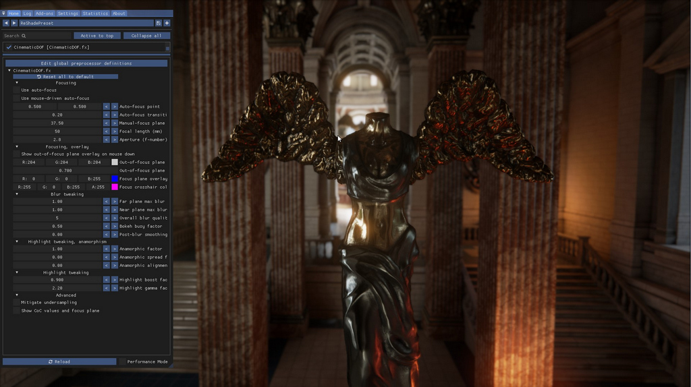
焦距 50mm，光圈 2.8
与光圈 5.6 相比，模糊效果略微更明显。你可以自由选择合适的模糊系数。通常只需调整焦距或光圈其中一个即可，无需同时调整两者。建议先将光圈保持在 2.8，仅调整焦距——数值越小模糊越少，数值越大模糊越多。
将摄像机移近焦点元素也会使模糊效果更加明显（使用手动对焦时还需调整手动对焦平面数值）
模糊调节
设置好对焦、焦距和光圈后，你可以进一步调节近景平面（焦点前方）和远景平面（焦点后方）的模糊效果。此外，还可以更改模糊质量并应用后处理模糊平滑系数，以消除可能出现的欠采样瑕疵。
让我们来看看这些效果。以下使用默认的焦距 100mm 和光圈 2.8。
远景平面模糊
首先是远景平面最大模糊值（Far plane max blur）。在此可以调节由焦距 + 光圈 + 距离组合产生的模糊强度。值为 1.0 时产生该组合的默认模糊效果；值为 0 时完全关闭远景平面的模糊。若设置为较高的值（如 3.0），将产生如下所示的过度模糊效果。
远景平面最大模糊值设为 3.0：
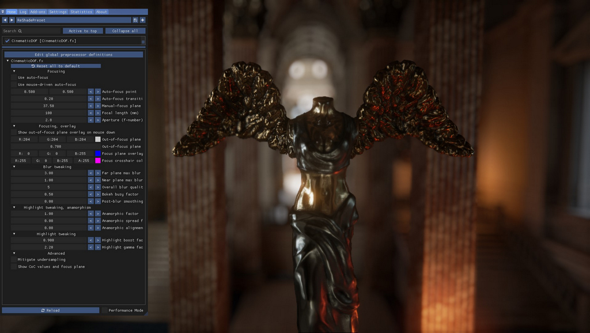
远景平面模糊值为 3.0
将模糊值改为较低的值（如 0.5），结果如下：
远景平面模糊值为 0.5
这看起来可能与使用更短焦距（如 50mm）的效果相似，但实际并非如此：使用 50mm 镜头时，模糊从三维世界更深处、距对焦平面更远的地方开始；而使用 100mm 时，模糊从雕像翅膀处就已开始。由于模糊系数设置较低，模糊效果非常细腻。
近景平面模糊
此外，还可以调节近景平面的模糊效果。近景平面的模糊带有柔和边缘以增强真实感。近景平面模糊的规则与远景平面相同：设为 0 则关闭，设为较高值则使模糊效果极为突出。
以下示例中，焦点在雕像上，远景模糊已禁用，使用默认近景平面模糊系数 1.0。
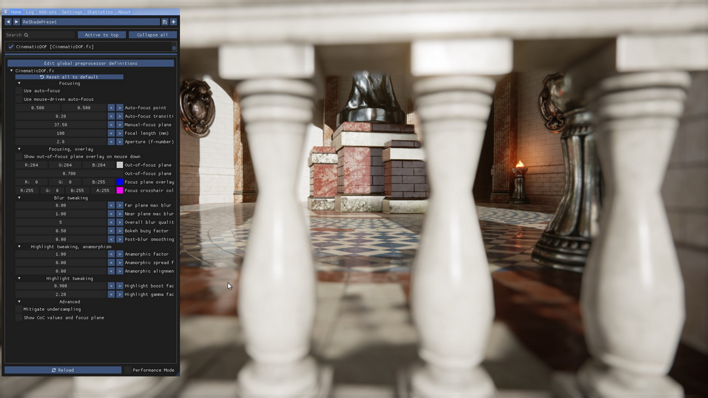
近景平面模糊值为 1.0
整体模糊质量与平滑系数
整体模糊质量默认设为 5。这是着色器为每个像素生成基于圆盘模糊时使用的光环数量。数值越高，光环越多，对近景和远景区域进行模糊处理时每个像素的采样数越多。默认值 5 在质量和性能之间取得了良好平衡，但如果需要更高质量，最高可调至 12。数值越高，着色器消耗的性能越多。
较高的质量值通常只在处理高光时才有必要。在没有焦外（散景）高光的普通模糊区域中，4 和 9 之间的差异并不明显。 然而在含有大量焦外/散景高光的场景中，如果模糊系数足够高，低质量设置下会在高光处出现点状瑕疵。这是一种被称为欠采样的现象所导致的副作用。
请看以下场景：
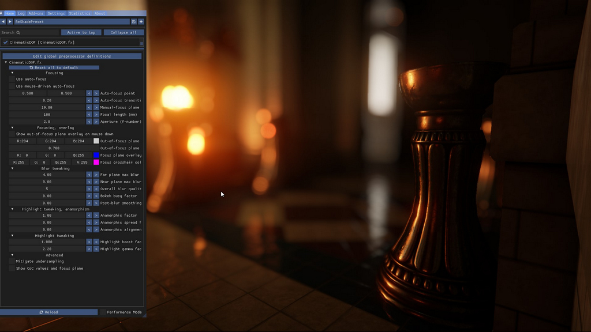
模糊质量设为 5
此处质量设为默认值 5，模糊系数较高，未采用欠采样缓解措施。焦点在右前方的金属柱上。 可以看到中左侧的焦外/散景高光中出现了一些点状瑕疵，说明高光存在欠采样现象。 可以将模糊质量调高以消除此副作用，或者勾选高级选项中的"缓解欠采样"复选框。
模糊质量设为 5，启用欠采样缓解
也可以通过另一个选项——后处理模糊平滑系数（Post-blur smoothing factor）来实现。该设置对近景和远景平面应用高斯模糊，以平滑高光效果。与质量设置相比，这个选项效果不够精细，但性能更好。
下图中关闭了欠采样缓解，改用平滑系数来消除欠采样瑕疵。
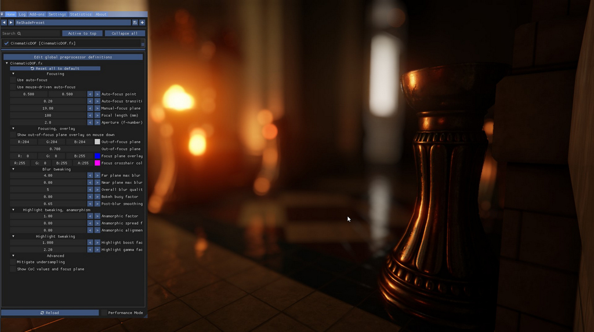
模糊质量设为 5，启用平滑处理
并非所有瑕疵都能消除：亮度较低的焦外/散景效果会被跳过，以避免模糊非高光区域。这是一种权衡，具体使用哪种方案取决于特定场景的需求。
高光调节
景深效果会产生焦外（散景）高光，前一章节中我们已见过示例。 电影感景深提供了多种设置，帮助着色器生成理想的焦外/散景高光。
繁忙散景系数
散景高光通常是颜色均匀的圆形高光。然而，你可以将圆形高光改为中心比边缘更透明的圆环形状。为此，将繁忙散景系数（Busy bokeh factor）调高至大于 0 的值。下图展示了系数为 0.5 时的高光效果。
繁忙散景系数为 0.5
高光增益系数
还有一个高光增益系数（Highlight boost factor）设置，可以稍微增强高光效果。
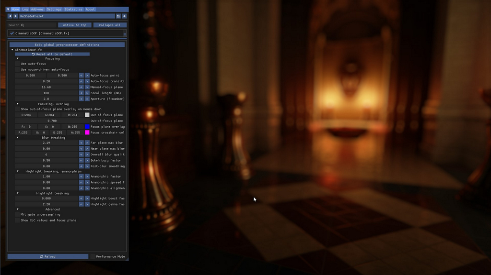
高光增益系数为 0.0
然而将高光增益系数调至 1.0，场景会呈现截然不同的效果：
高光增益系数为 1.0
此外还有一个伽马系数，可以稍微提亮所有像素。通常保持默认值 2.2 即可，但在较暗的场景中可能有所帮助。
变形宽银幕控制
电影中有多种镜头效果，其中之一是变形宽银幕散景形状——散景不形成完美的圆形，而是呈椭圆形。这种效果是由使用镜头将较宽的图像投影到较窄的镜头开口上造成的，结果形成垂直椭圆形。电影感景深支持这一特性，并提供了额外选项来扭曲椭圆形以模拟边缘畸变。这三个设置集中在着色器控制面板的"变形宽银幕控制"部分。
变形宽银幕系数
第一个系数是控制散景形状变形程度的变形宽银幕系数（Anamorphic factor）。默认值为 1.0，即所有散景形状均为标准圆形。将数值降低至 0.0，圆形会逐渐变为椭圆形。下图展示了变形宽银幕系数为 0.7 时的场景效果。 边缘处可见轻微形变，但靠近中心的形状仍保持圆形。这可用于模拟鱼眼镜头的边缘畸变效果。
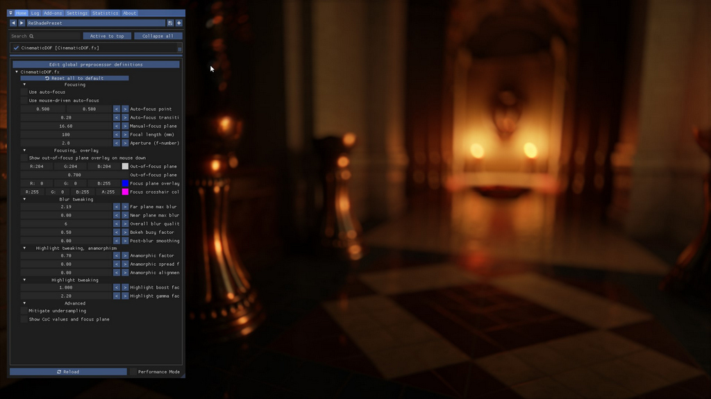
变形宽银幕系数为 0.7
变形宽银幕扩散系数
默认的扩散系数使变形宽银幕效果仅出现在边缘而非中心。要使其在画面各处均匀显示，可以将变形宽银幕扩散系数（Anamorphic spread factor）调高至大于 0.0 的值，1.0 表示变形宽银幕效果均匀应用于整个画面。以下是相应示例。
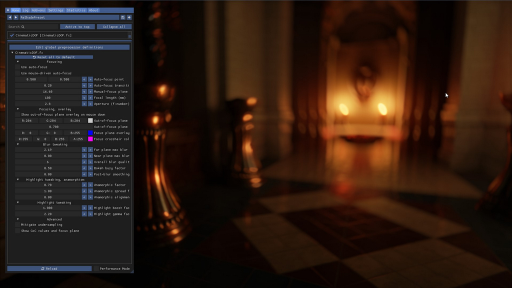
变形宽银幕系数为 0.7，扩散系数为 1.0
变形宽银幕对齐系数
变形宽银幕对齐系数（Anamorphic alignment factor）可实现经典变形宽银幕效果——垂直椭圆形：将值设为 1.0 时，椭圆形像经典变形宽银幕镜头一样垂直排列。若使用小于 1.0 的值，椭圆形会绕中心旋转， 值为 0.0 时呈现前几张截图中的排列方式。以下是将设置调至 1.0 以获得经典变形宽银幕镜头效果的示例。
变形宽银幕系数为 0.6，扩散系数为 1.0，对齐系数为 1.0
尽情发挥
你甚至可以创造出漩涡效果：
变形宽银幕系数为 0.01，扩散系数为 1.0